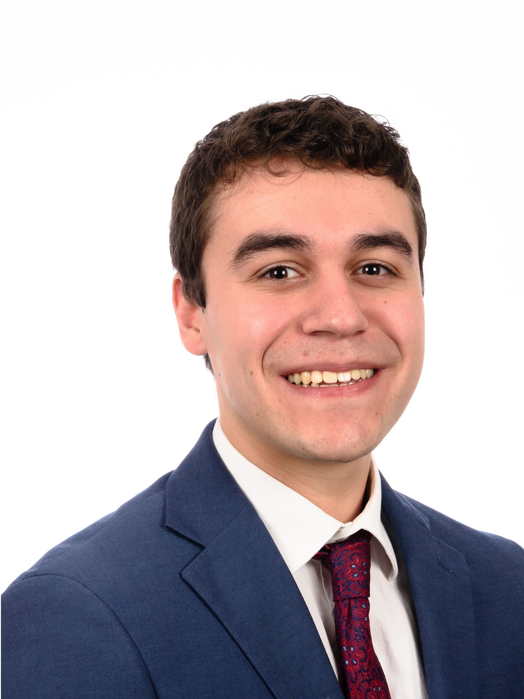

Associate Professor

Peter Kekenes-Huskey, Ph.D.
Department of Cell & Molecular PhysiologyCV
Research and Teaching Statement
Ph.D. Chemistry, 2009
California Institute of Technology
B.S. Chemistry, 2001
UNC Asheville
California Institute of Technology
B.S. Chemistry, 2001
UNC Asheville
Peter Kekenes-Huskey, Ph.D. (PI) is an associate professor at Loyola University Chicago.
He graduated summa cum laude with a B.S. in Chemistry from the University of North Carolina Asheville (2001), which was followed by a Fulbright Fellowship to Germany, whereafter he obtained his Ph.D. at the California Institute of Technology (2009).
At UNC Asheville, he developed algorithms for the ab initio prediction of halogenated ethane decomposition rates as a Barry Goldwater Scholar with Bert Holmes and George Heard (UNCA).
His Ph.D. research with William A. Goddard, III (Caltech) focused on developing Monte Carlo tools and molecular dynamics simulations.
Peter complemented his studies with applied mathematics and computer science coursework from algorithm design to parallel computing, in fulfillment of National Science Foundation and Department of Energy Computional Science Graduate Fellowships.
Following his Ph.D. work, he worked as a Staff Scientist at Arete Associates from 2007 to 2010, where he developed near-real time image processing and signal detection algorithms for defense applications.
Returning to his passion for the physical sciences, he pursued postdoctoral studies with Professors Andy McCammon (Chemistry) and Andrew McCulloch (Bioengineering) at the University of California San Diego under support of American Heart Association and National Institutes of Health fellowships, to understand cardiac calcium signaling using molecular dynamics, partial differential equations and systems biology models.
In 2014, he began his independent career in the Chemistry Department at U Kentucky, where his lab studied multi-physics descriptions of molecular-driven events with macro-scale phenomena, with myriad applications in biological and nanoscale systems. His lab moved to Loyola University Chicago Stritch School of Medicine in 2019 to build an experimental complement to his computational research directions. As an independent investigator, he has been recognized for this work through becoming the first Maximizing Investigators' Research Award recipient at the University of Kentucky (Link) and being named as the Stritch School of Medicine's Senior Scientist of the Year (Link).
In 2014, he began his independent career in the Chemistry Department at U Kentucky, where his lab studied multi-physics descriptions of molecular-driven events with macro-scale phenomena, with myriad applications in biological and nanoscale systems. His lab moved to Loyola University Chicago Stritch School of Medicine in 2019 to build an experimental complement to his computational research directions. As an independent investigator, he has been recognized for this work through becoming the first Maximizing Investigators' Research Award recipient at the University of Kentucky (Link) and being named as the Stritch School of Medicine's Senior Scientist of the Year (Link).
pkekeneshuskey@luc.edu
Visiting Professor
Celia Shiau, Ph.D.
Department of Biology
Ph.D. Developmental Neurobiology, 2009
California Institute of Technology
California Institute of Technology
At UNC Chapel Hill, Celia Shiau has a tenured Associate Professor position in the departments of biology and microbiology & immunology. She received her PhD from Caltech in developmental neurobiology using the chick model system and in vitro systems in the lab of Marianne Bronner. She then completed her postdoctoral research in glial biology and macrophages at Stanford University using zebrafish genetics and cutting-edge microscopy in the lab of Will Talbot. Dr. Shiau's research focuses on mechanisms that regulate macrophage cell states in a variety of physiologically relevant environments, such as the brain and the gut, as well as fundamentals concerning the function of the immune system in tissue development and homeostasis. Through Loyola's Cardiovascular Research Institute and the funding from the CVRI Innovation & Exchange Scholar program, she is excited to make advancements in cutting-edge research in cardiovascular science.
shiauce@bio.unc.edu
Postdoctoral Scholars

Xuan Fang, Ph.D.
Ph.D. Molecular Biochemistry and Biophysics, 2019
Illinois Institute of Technology
Illinois Institute of Technology
After graduating from Illinois Institute of Technology, Xuan joined the PKH lab in Jan, 2020. Having survived five brutal Chicago winters, he has developed a skill set in biochemical and biophysical characterization of proteins. His main research interest lies in the understanding of enzyme mechanisms on the molecular level, using both computational and experimental techniques. Outside the lab, Xuan is a big fan of basketball, beer, and Rock music. Fun fact, when time permits, Xuan also does micro home brew with his buddies. Best batch so far is a pineapple wheat ale with a really refreshing fruity taste (Recipe available upon request).
xfang2@luc.edu

Audrey Kongmeneck, PH.D.
Ph.D. Theoretical Chemistry, 2022
University of Paris-Cité
University of Paris-Cité
After a PhD in theoretical chemistry and a postdoc at the University of Paris-Cité, Audrey went across an entire ocean to join the PKH lab in Oct. 2022. Her main research interests are focused on therapeutic target proteins, especially those with complex structures and functions, such as ion channels. To study these molecules, she mostly uses computational methods. Besides research, Audrey has many interests, the main ones involving drawing cartoons, and making home-made pastries.
adeyawekongmeneck@luc.edu
Graduate Students

Emily Krueger
Integrated Biomedical Sciences PhD candidate
Emily Krueger graduated cum laude from Monmouth College with a B.A. in Biopsychology in May 2021. She is a graduate student in the Integrated Program for Biomedical Sciences PhD program. Her main research interest is understanding the relationship between microglia and the development of Alzheimer’s Disease using wet-lab and computational methods. Besides her academic and research interests, Emily enjoys living an active and engaging life in her hometown of Chicago.
ekrueger2@luc.edu
Undergraduate Students

Joshua Bruno
Biophysics
Joshua Bruno is a sophomore majoring in biophysics at Loyola University Chicago. Josh was selected to work for PKH lab through Loyola University's First Year Research Experience (FYRE) from his interest in molecular physiology. In PKH lab Josh works under Bin Sun with the goal of quantitatively recording microglial morphologies present in brain tissue by use of image filtering techniques with Python.
jbruno2@luc.edu

Michael Muzupappa
Molecular Neuroscience
I am going to be a sophomore at Loyola this academic year, my major is molecular neuroscience. I was able to become a part of the lab through the FYRE program. My part in the lab is to evaluate the effectiveness of PCA on various microglia morphologies and determine if MACH filter effectiveness can be increased through PCA.
mmuzupappa1@luc.edu

Rohan Sethi
Bioinformatics
Rohan is a sophmore majoring in Bioinformatics. Rohan started working in the PKH lab during his freshman year. In the PKH lab, Rohan is currently working on coding a model of negative feedback inhibition on the PI3K-Akt-PTEN pathway by implementing a Goodwin Oscillator in python. This model to investigate the kinetics of said feedback inhibition to potentiate immune cell anti-tumor pathways.
rsethi1@luc.edu
Staff

Peter Varughese, MPH
Reseacher Assistant
Peter Varughese is a graduate from the University of Illinois at Chicago (UIC) with honors obtaining a Bachelors of Science (BS) in Biological Sciences and a Bachelors of Art (BA) in Psychology. During his undergraduate studies, he did research on ovarian cancer at UIC College of Pharmacy. After completing his Masters of Public Health (MPH) with a concentration in Epidemiology at Loyola University Chicago (LUC), he is working on using image detection to identify differences in microlgia morphology between patient's with Alzheimer's Disease and patient's without Alzheimer's Disease.
pvarughese@luc.edu

Geraldine San Ramon
Reseacher Assistant
Geraldine graduated from Loyola with MS Bioinformatics in Dec 2021. She also graduated with a BS Biochemistry and MS Biotechnology. She previously worked on reproductive genetics and has years of hands-on molecular lab experience. She’s currently working on MD simulation of proteins involved in LQTS. She likes to code and troubleshoot problems. On her days off, she likes to travel, hike, snorkel or just read.
gsanramon@luc.edu
Summer Researcher

Jacob Soto
Research Intern
Jacob Soto is a Senior at Illinois State University pursuing a Bachelor's degree in Computer Science. He joined the PKH lab in May 2023 as a Research Intern for the summer. Jacob hopes to help out the PKH lab with computational analysis through the creation of code. In his free time, Jacob enjoys playing sports such as football, basketball, and soccer.
jsoto24@luc.edu
Ben Ward
Research Intern
Benjamin Ward graduated Summa Cum Laude with a B.S. in Physics from Loyola University. He is interning with the PKH lab for the summer to investigate continuum modeling problems in biology including the study of paired diff EQs describing diffusion of cells and signaling molecules. Ben also does research on DNA topology and mutation behavior related to Huntington's disease for the Loyola physics department and will be leaving Chicago soon for his PhD study in mechanical engineering at Vanderbilt university. In his free time, he enjoys making maps, going to the gym, and living intrepidly.
bward5@luc.edu
Julia Frey
Research Intern
Julia is a senior majoring in Neuroscience at The Ohio State University. She joined the PKH lab as part of the Cardio-SURPH program for the 2023 summer. Outside the lab, Julia enjoys reading, trying new recipes and traveling.
jfrey3@luc.edu
Alec Loftus
Research Intern
Alec completed his bachelors in Molecular Biology and masters in Bioinformatics at Loyola University Chicago. He has a passion for molecular and genetic research with a focus on genetic diseases. He is joining the PKH lab as a summer intern to work on molecular dynamic simulations of parvalbumin using AMBER. Aside from research, Alec loves to sing and make music as well as run and bike around the neighborhoods of Chicago.
aloftus1@luc.edu
Alumni
Dylan Colli
BS Chemical Engineering
Tom Pace
Ph.D. student in Physics & Astronomy
Caitlin Scott
Postdoctoral Researcher (Currently Assistant Professor)
Bin Sun
Postdoctoral Researcher (Currently Assistant Professor)
Ben Chun
Postdoctoral Researcher (Currently Process Controls Engineer)
Kalyan Immadisetty
Postdoctoral Researcher (Currently Lead Bioinformatician)
Jeremiah Jacob-Dolan
BS Biochemistry and Biostatistics
Chisom Orizu
2022 Summer Intern